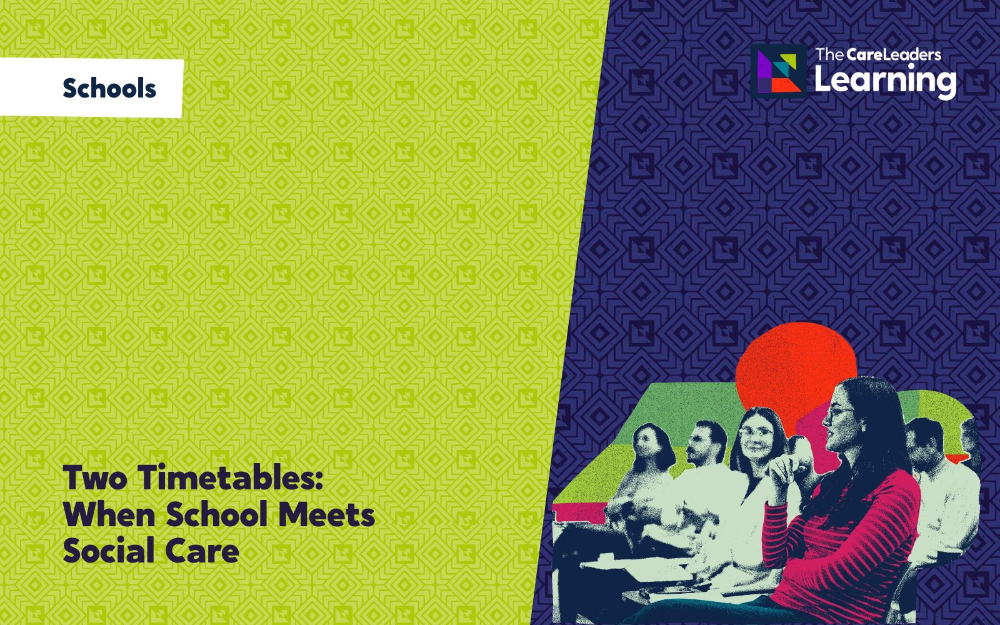
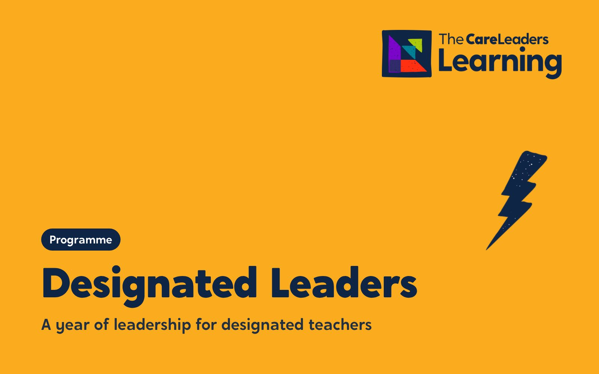

Expect more. Then help it happen.
A development day for everyone who works in your school, from teachers and teaching assistants to pastoral, office and site staff, on raising expectations for children in care, previously in care and with a social worker. Your staff see how their words, classrooms and everyday decisions shape what these children believe they can do. Every adult leaves with their own named action in a school plan, and a date to review it with your designated teacher.
- Length
- One full day, in five sessions
- How
- Face to face, in your school, on an INSET or development day
- Group
- Your whole staff team, teaching and support staff together
- For
- Primary, secondary and special schools
The DfE’s statutory guidance for designated teachers asks them to make sure school staff have high expectations of children in care and previously in care. One person can’t do that alone. Low expectations rarely look unkind. They look like a lowered target, an easier task, or a conversation about the future that never happens. Children notice, and over time they aim lower. The day is built in five sessions. Each starts with a story from a child’s side, explains it with the research on expectations and belonging, and ends with something your staff do differently from the next morning.
What changes
- Notice when a lowered target, set or task is about a child’s care status rather than their ability, and challenge it
- Change the words they use about children in the staffroom, in meetings and in reports
- Use a child’s strengths to give them stretch, responsibility and roles in school, not only extra support
- Talk with children about college, apprenticeships, university and work in ways that are hopeful and honest
- Carry out their own named actions in the school plan and review them with the designated teacher
- Adults who expect them to do well and give them the help to get there
- Being known for what they are good at, not for being in care
- Classrooms where they are not singled out, and jobs and roles that show they belong
- Adults who take their plans for the future seriously
Story
- Describe what a child in care or with a social worker may bring into school, including loss, moves and gaps in learning, and how it affects trust and concentration.
- Recognise low expectations from the child’s side in everyday phrases, tasks, groupings and displays.
Theory
- Explain, using Rosenthal and Jacobson’s Pygmalion research (1968), how adults’ expectations reach children through language, grouping, feedback and targets.
- Explain, using Maslow’s hierarchy of needs (1943) and Baumeister and Leary’s work on the need to belong (1995), why a child needs to feel safe and that they belong before stretch can work.
Action
- Use a walk-through checklist and Language that Cares to audit a classroom or shared space and replace phrases that hold children back.
- Map one child’s strengths, plan two ways to build on them, and write their own named action in the school’s aspiration plan with a review date.
- All staff in primary, secondary and special schools: teachers, teaching assistants, pastoral, office and site staff
- Designated teachers, who can co-lead parts of the day with us
- Senior leaders and governors responsible for children in care and previously in care
- Run for your whole staff team in one room. No prior training is needed: the day starts from what staff already see in school
Session by session
 Story
Story Theory
Theory Action
Action
Every session opens with a story from a child’s side, gives you the theory that explains it and ends with a tool staff practise in the room and use the next day. The stories are composites. They draw on real experiences of care but are not one person. Open a session to see what happens.
1Where they start
Story. Priya, 9, starts her third school in two years in the middle of the spring term. On her first day she is given a reading book two levels below the one she had finished, because her records haven’t arrived yet.
Theory. Maslow’s hierarchy of needs (1943) explains why a child who is still working out whether she is safe, and whether she belongs, has less left for learning. We link this to what the designated teacher guidance asks every school to understand about children in care and previously in care.
Action. Notice, don’t diagnose. Staff fill in a workbook page on one anonymised child they know: what the child might be carrying, what they have noticed, and what would help in the first week, without labelling the child.
By the end of this part staff can describe what a child in care or with a social worker may be carrying into school, and name one thing that helps them feel safe in the first week.
 You leave with A workbook page on one child your staff know, anonymised, and what they might be carrying
You leave with A workbook page on one child your staff know, anonymised, and what they might be carrying
2What we expect
Story. Marcus, 15, tells his mentor he wants to be a vet. She says, kindly, “Let’s think about something more realistic.” He doesn’t bring it up again.
Theory. Rosenthal and Jacobson’s Pygmalion in the Classroom (1968) started decades of research on teacher expectations. It shows how adults’ beliefs about a child travel through grouping, feedback, tone and who gets asked the hard question.
Action. Language that Cares. Staff sort real phrases heard in schools into those that hold children back and those that stretch them, then rewrite the ones they recognise from their own staffroom.
By the end of this part staff can explain how expectations reach a child, and replace three phrases they use with ones that stretch.
 You leave with A list of phrases to stop using, and what to say instead
You leave with A list of phrases to stop using, and what to say instead
3Environments shape beliefs
Story. Priya’s class has an “All about my family” display. Every child has a photo up except her. Nobody meant anything by it.
Theory. Baumeister and Leary’s work on the need to belong (1995) shows belonging is a basic human need. Children read it from small signals: displays, seating plans, rewards, who gets asked and who gets jobs.
Action. A walk-through. Staff walk a classroom and a shared space with fresh eyes, using a checklist, and note what tells a child they belong and what tells them they are different.
By the end of this part staff can audit a classroom or shared space for messages about belonging and name one change to make.
 You leave with A walk-through checklist for classrooms and shared spaces, with your first findings
You leave with A walk-through checklist for classrooms and shared spaces, with your first findings
4Growing strengths
Story. Marcus is the one who calms the younger children on the school bus. A teaching assistant notices and asks him to help run the Year 7 lunch club.
Theory. Carol Dweck’s work on growth mindset (Mindset, 2006) shows children’s beliefs about whether ability can grow are shaped by how adults praise and challenge them. A strengths-based approach starts from what a child does well and builds stretch on top of it, not only extra support.
Action. Growth Mindset and a strengths map. Staff map the strengths of one child they teach, then plan two ways to use them in lessons, clubs or responsibilities, and practise feedback that praises effort and strategy.
By the end of this part staff can map one child’s strengths and plan two specific ways to build on them.
 You leave with A strengths map for one child and two things to try next week
You leave with A strengths map for one child and two things to try next week
5Our pathway
Story. Marcus, now 17, says what made the difference wasn’t one big intervention. It was a few adults who kept asking about the vet plan, and meant it.
Theory. The designated teacher guidance gives the designated teacher lead responsibility, but high expectations only stick when every adult owns a part. One person, one change, one week: small named actions get done, big shared intentions don’t.
Action. The school plan. Led with your designated teacher, staff build the school’s aspiration plan together. Every adult writes one named action and agrees when it will be reviewed.
By the end of this part every member of staff can name their own action in the plan and the date it will be reviewed.
 You leave with A school action plan with a named action for every member of staff and a review date
You leave with A school action plan with a named action for every member of staff and a review date
Choose how you run it
We come to your school for an INSET or development day. The five sessions run across the day, with breaks between them, and your designated teacher can co-lead the final session.
- Length
- One full day, in five sessions
- Group
- Your whole staff team, teaching and support staff together
- You provide
- A hall or large room, a screen, tables for group work and the full day protected
Included for every delegate: a workbook to keep, the recording of the session for 12 months, an interactive on-demand course on The Care Leaders Online for 12 months, and a certificate of completion.
Delivered at Darlington as a one-day, five-session course for all school staff, within the Designated Leaders Programme.
Read the case studyQuestions commissioners ask
How is the day structured?
Five sessions, each built the same way. Story: a moment from a child’s side, such as Priya’s first day at her third school or Marcus being told to be more realistic. Theory: the research that explains it, from Maslow’s hierarchy of needs to the Pygmalion research on expectations and Baumeister and Leary’s need to belong. Action: a tool staff practise in the room, such as Language that Cares, a classroom walk-through or a strengths map. The day ends with every adult writing their own action in the school’s plan.
How does this fit our designated teacher’s statutory role?
The DfE’s statutory guidance asks designated teachers to take lead responsibility for making sure school staff understand children in care and previously in care, and have high expectations of their learning. This day lets them do that with the whole staff at once, and gives them a plan they can hold everyone to afterwards.
Does it cover children with a social worker, not only children in care?
Yes. Virtual school heads have had a strategic role for children with a social worker since 2021, and for children in kinship care since September 2024. The stories, examples and plan cover these children as well as children in care and previously in care.
Can our designated teacher lead parts of the day?
Yes. The day is designed so designated teachers can lead it with us, especially the final session on the school plan, which helps the plan keep going after we leave.
What happens after the day?
Every member of staff leaves with a named action in the school plan and a review date. If you want support across a whole school year, the Designated Leaders Programme builds on this day.
Who delivers it?
People with lived experience of care and professional experience of children’s services. Every course is designed by Luke Rodgers BEM and follows the same Story, Theory, Action approach.
How do you price it?
We quote per cohort, based on how many people, the format and how much tailoring you want. Tell us what you need and we’ll send you a clear quote.
Often booked with

SchoolsTwo Timetables: When School Meets Social CareTeachers and social workers learning each other’s worlds, so children stop falling between them.Half day. On demand in about an hour SchoolsTools for SchoolsReading the messages in children’s behaviour, with three tools staff use the next morning.A twilight, a full day or a keynote
SchoolsTools for SchoolsReading the messages in children’s behaviour, with three tools staff use the next morning.A twilight, a full day or a keynote
SchoolsThe Designated Leaders ProgrammeA year that turns designated teachers into leaders of trauma-informed practice in their school.A school yearTalk to us about Raising Aspirations
Tell us who it is for and roughly how many people. We will shape it around your service and send you a quote.